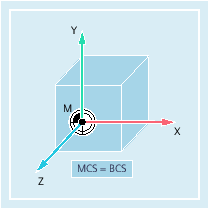
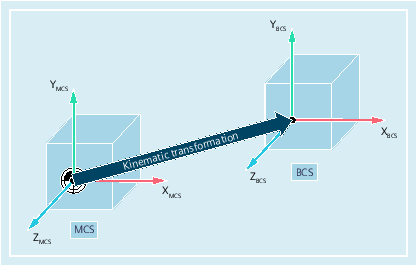

The basic coordinate system (BCS) consists of three mutually perpendicular axes (geometry axes) as well as other special axes, which are not interrelated geometrically.
BCS and MCS always coincide when the BCS can be mapped onto the MCS without kinematics transformation (e.g. 5-axis transformation, TRANSMIT/TRACYL/TRAANG).
On such machines, machine axes and geometry axes can have the same names.
BCS and MCS do not coincide when the BCS is mapped onto the MCS with kinematics transformation (e.g. 5-axis transformation, TRANSMIT/TRACYL/TRAANG).
On such machines the machine axes and geometry axes must have different names.
The workpiece is always programmed in a two- or three-dimensional, right-angled coordinate system (WCS). However, such workpieces are being programmed ever more frequently on machine tools with rotary axes or linear axes not perpendicular to one another. Kinematic transformation is used to represent coordinates programmed in the workpiece coordinate system (rectangular) in real machine axis motion.
See also:
Overview of the various coordinate systems
What is the relationship between the various coordinate systems?